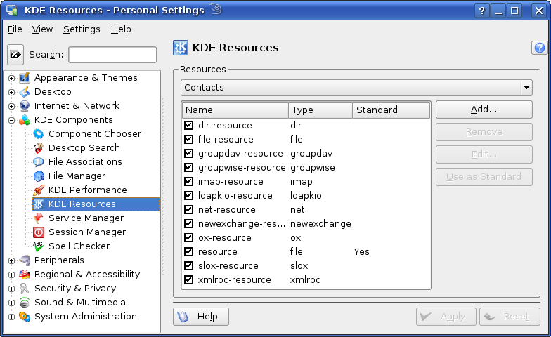

KAddressBook can use multiple resources for loading and storing
its contacts. After starting KAddressBook for the first time you will have
a default resource installed that saves all contacts in a vCard file
under $; you can add more resources
by using the Resource Configuration dialog, which is available in
the System Settings under Advanced->
KDE Resources:HOME/.kde/share/apps/kabc/std.vcf

The Resource Configuration Dialog.
Load the configuration module you want to add your resource(s) to selecting it from the drop down box at the top of the Resources section. The module for configuring KAddressBook's resources is Contacts.
Launch the Resource Configuration dialog by pushing the button. Choose the resource you want to add to your Contacts module and click OK to confirm your choice.
- Akonadi
To be written
- Directory
Each contact will be stored in its own file;
- File
All contacts will be stored in one file;
- GroupDAV Server (e.g. Open Groupware)
To be written
- Novell GroupWise Server
To be written
- Addressbook on IMAP Server via KMail
This resource stores contacts as messages on an IMAP server. KMail is used to access the IMAP server, therefore, if you use this type of resource, KMail will open whenever you access the address book, if it (or Kontact) are not already running.
- LDAP
All contacts will be stored on a LDAP server;
- Network
All contacts will be stored in one file, which can be located on a remote server (for example, through HTTP, WebDAV, FTP or Fish).
- OpenXchange Server
This resource stores contacts on an OpenExchange server.
- Addressbook on Scalix Server via KMail
To be written
- Suse Linux Openexchange Server
This resource stores contacts on an OpenExchange or SUSE Linux® OpenExchange groupware server.
- eGroupware Server (via XML-RPC)
To be written
After selecting the type of resource another dialog appears where you can configure the resource-specific settings.
The File and Directory resources support different formats for storing the contacts:
- vCard
the contacts will be stored in the vCard format, as specified in RFC 2426;
- Binary
the contacts will be stored in a binary format — this increases performance during loading and saving, but it is not portable like the vCard format;
- KDE Repository Accounts
To be written
KAddressBook needs a standard resource, where all contacts should be saved if no other resource is specified; for this reason, after starting KAddressBook the first time, there is already a resource available. If you want to use another resource as the standard resource, use the button to select it. You must have both read and write access to the new standard resource, otherwise you won't be able to select it.